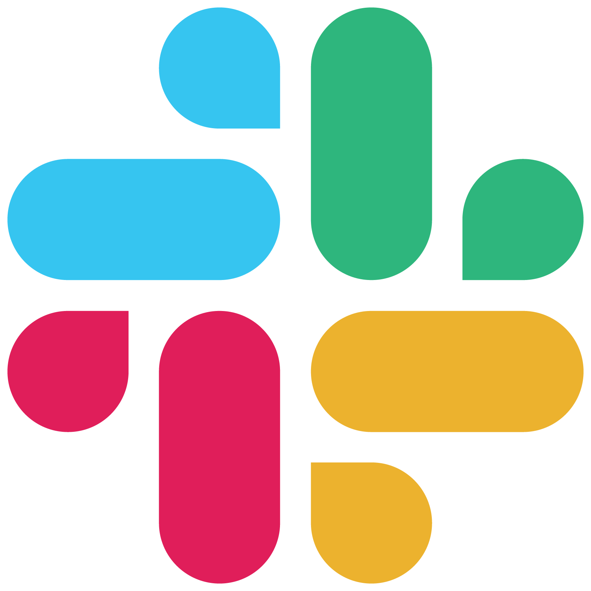

Tasks
›
Weekly report
›
Edit
Weekly report
Iterate with AI
Test run
Save
Package
main.py
weekly-summary.prompt
PostgreSQL
postgres
Reporting database

Slack
slack
Team workspace
Add New
Settings
Inputs
Manage
Triggers
Timeout
15m
Concurrent runs
False
Auto retry
True
Data logging
On
Demo copy of one QBash page
Inputs
Edit
channel
text
days
number
Saved